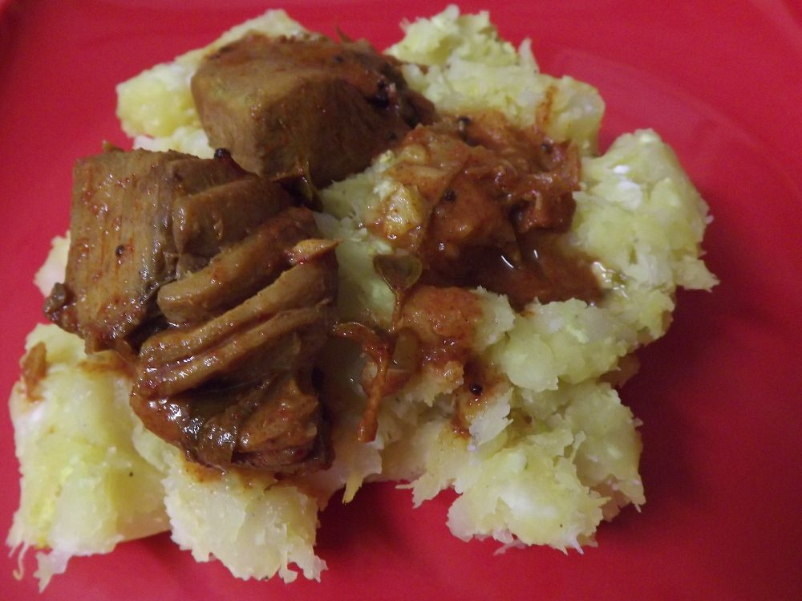

Kappa and Meen Curry
mashed tapioca with a fierce red fish curry, the pairing Kerala argues about

Contains: fish
Checked against the ingredient list for ten allergens: milk, egg, fish, crustaceans, tree nuts, peanuts, sesame, mustard, soy and gluten. Brands vary, so read the label on anything new to you.
Ingredients
Quantities for 4.
- 800g tapioca, peeled and cubed Yamcassava is what is meant; yam is the closest thing in this pantry
- 500g steaks Fishsardine or kingfish traditionally
- 100g, grated Coconut
- 12 Shallot
- 4 Green Chilli
- 1 tsp Turmeric
- 2 tsp Chilli Powder
- 4 pieces Kokumkudampuli, the smoked fish tamarind, is authentic; kokum is the nearest available
- 1/4 tsp Fenugreek Seeds
- 3 sprigs Curry Leaves
- 4 tbsp Coconut Oil
- to taste Salt
Cookware
stovetop
Before you start
- Two separate pots. The tapioca is boiled and mashed with coconut; the fish curry is cooked in a clay pot and stays thin and sharp.
- The curry should be aggressively sour and salty. It is a sauce for a bland, starchy partner.
Method
- Boil the tapioca in salted water until a knife slides through, about 25 minutes. Drain well.
- Crush the coconut with half the shallots, the green chilli and turmeric, and mash it through the hot tapioca.
- For the curry, soak the kokum in 200ml warm water.
- Fry the remaining shallots, fenugreek and curry leaves in the coconut oil, add the chilli powder and fry 1 minute.
- Add the kokum with its water, bring to a boil, then slide in the fish and simmer 10 minutes without stirring.Do not stir. Shake the pan instead or the fish breaks up.
- Rest 15 minutes before serving alongside the mashed tapioca.
Storage
The curry keeps 2 days refrigerated and improves overnight. The tapioca is best fresh; it stiffens hard when cold and needs steaming to revive.
Nutrition Medium estimate
High protein: 30 g a serving, 20% of the calories
| Per serving374 g | Per 100 g | |
|---|---|---|
| Calories | 590 kcal | 158 kcal |
| Protein | 29.7 g | 8 g |
| Carbohydrate | 62.5 g | 17 g |
| of which sugars | 3.7 g | 1 g |
| Fibre | 11.2 g | 3 g |
| Fat | 24.9 g | 7 g |
| of which saturated | 19.2 g | 5 g |
| of which unsaturated | 3.3 g | 1 g |
Ingredients given to taste count as zero, so the real figures run a little higher. Nearest database match used for curry leaves, kokum. Estimated from raw ingredients using USDA FoodData Central.
Written and checked against sources, not cooked in a test kitchen. Times, yields, allergens and nutrition are worked out rather than measured, so use your own judgement on doneness and on storing. More in About.